: This is Serena. Judai's not with us. He's trying to delay Academia's forces so that we could escape.
: This is Serena. Judai's not with us. He's trying to delay Academia's forces so that we could escape.
: This is Serena. Judai's not with us. He's trying to delay Academia's forces so that we could escape.
The new voice's tone softened a bit.
???: Serena, I'm pleased Judai had managed to convince you of the truth. But I must admit, I was not anticipating a mass rescue.
 : Things got complicated.
: Things got complicated.
Serena simply said.
???: Let me repeat my previous question: Where is
Yuki Judai ?
?
She was about to answer that when...
Alex: There!
Alex shouted, pointing behind their group. Serena,
Asuka,
Yusho and the others saw Judai himself running out
from the tunnel. They were all happy to see him return.
and the others saw Judai himself running out
from the tunnel. They were all happy to see him return.
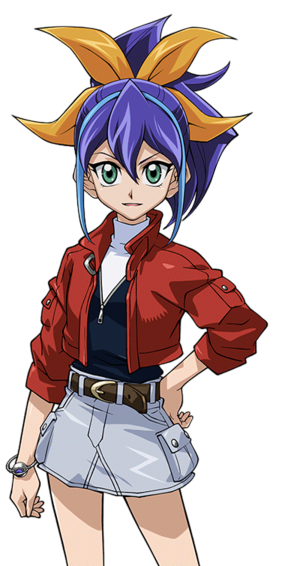
: He just got back! He's with us now!
Serena said in total relief. As they met up, Judai gave Yusho back his Duel Disk while he was given his own back from Asuka.
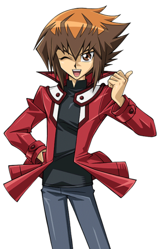
: Thanks for holding on to this.
Judai said. Asuka nodding with a smile.
???: Judai, are you alright?
 : I'm good now
Astral
: I'm good now
Astral . Let's get out of here!
. Let's get out of here!
 : Agreed. Standby.
: Agreed. Standby.
Astral replied as the light then turned red. As they waited, Judai turned to Serena, who was glad he made it back to them safely.
: Good thing you're okay Judai, or I'd have to come back to get you myself.
Serena said in a stubborn, but friendly tone. Judai smiled.
 : Same here.
: Same here.
Seconds later, everyone got transferred aboard the massive ship. Once inside, they all marveled at their new surroundings.

Alex: Wow! This really is a spaceship!
Alex said excitedly.
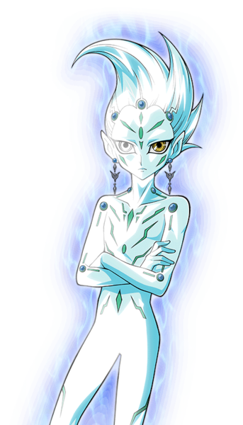
: I wouldn't exactly call it that, but it is close enough.
The whole group turned and gasped when they gazed upon Astral.
Student: W-What is that?!
One of the younger students asked, sounding afraid. Judai decided to come to Astral's defense.
 : Woah, everyone just chill! It's okay! Astral here is a friend of mine. He's not gonna harm anyone.
: Woah, everyone just chill! It's okay! Astral here is a friend of mine. He's not gonna harm anyone.
Judai assured the frightened students.
: He is telling the truth. I am no danger to any of you. After all, I did just aided in your escape from Academia.
Astral said. Gradually, everyone calmed down.
 : So you're the guy I talked to on Judai's Duel Disk?
: So you're the guy I talked to on Judai's Duel Disk?
Serena asked as she approached the glowing being.
 : That's correct. It is a pleasure to finally meet you in person, Serena.
: That's correct. It is a pleasure to finally meet you in person, Serena.
Astral said with a friendly smile.
 : I guess I should say thanks for saving us. So... thanks.
: I guess I should say thanks for saving us. So... thanks.
Serena said sincerely. Astral nodded in appreciation.
: You are welcome.
Astral replied.
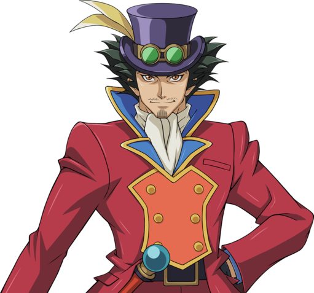
: I owe you my gratitude as well.
Yusho said.
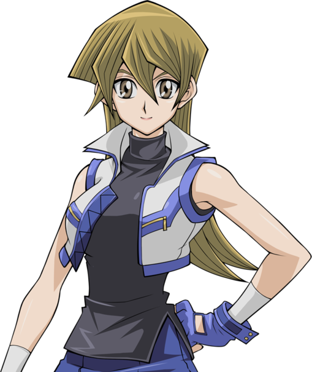
: Mine too.
Asuka added.
: Of course. Now if all of you would find a place to sit, we will be on our way.
Astral said, indicating the various seats on the ship.
As soon as everyone was seated, Astral moved the airship into the sky and a bright flash illuminated on the big screen in front. As the flash faded, the group saw swirling stars in a vast blackness as they passed by.
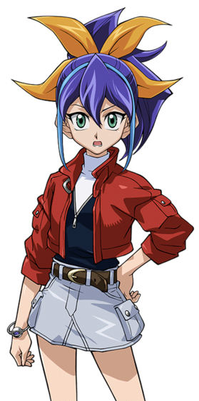 : Where are we now?
: We have left the Fusion Dimension and the world it is connected to. In a short time, we will arrive at your new safe haven.
: Where exactly are you taking us?
Yusho asked curiously. This time, Judai answered.
: Believe it or not, we're heading to the world I come from. Plus, you won't have to worry about
Akaba Leo and Academia finding you. No one there can reach us beyond a certain barrier separating our worlds. Also, I think you guys will really like where you're going to stay!
and Academia finding you. No one there can reach us beyond a certain barrier separating our worlds. Also, I think you guys will really like where you're going to stay!
He said excitedly.
: What place would that be Judai?
Asuka asked. Judai gave a toothy grin.
: It's a surprise.
He said mysteriously as he scratched his nose.
As the students discussed among themselves where Judai and Astral were taking them, Serena silently pulled Judai into a private section so they couldn't be overheard.
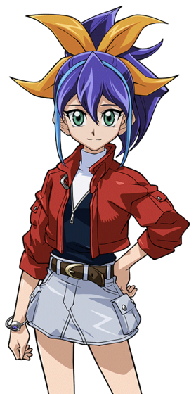
: Judai, thanks for helping us all get out of there. I... really mean it.
She said softly.
: Sure thing, Serena.
Judai said with a nod. He then saw that she still looked uncertain about something.
: What's up? What's bothering you?
Serena looked straight into Judai's eyes.
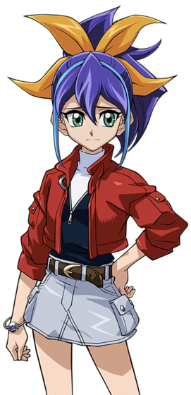
: There are two things I want clarified before I can start to feel alright.
She said seriously.
: Okay. Like what?
Judai asked.
: Back in Yusho's school, you told me Leo Akaba needs me and 3 other girls for some kind of plan that would kill all of us. You said I should wait to hear the whole story, but I have to know one thing.
: Please tell me... what exactly does he need us for? I should at least know that much.
Serena demanded. Judai sighed as he scratched his head.
: Okay, if you insist. Before all of this started, Leo lost the life of his one and only daughter that he treasured more than anything else in the world. Her loss drove him over the edge. Now he has built a machine that could revive her, but in order for it to work... he needs the life force of you and the other girls he's after. The process of bringing back his daughter would end up killing all 4 of you.
Serena stood there in total shock. She never imagined it would be something as tragic as this.
: He never once said... he had a daughter. But then again...
Serena said as her voiced hardened.
: He didn't feel obliged to mention his son either. He only seems to care about himself.
She still felt angered and betrayed that the man never valued her as a loyal soldier, but those feelings increased knowing she was only a means to an end... which would mean her own end.
 : Yeah, that jerk only wants what he lost and would do anything to get it back. He has no mind or heart for anything else...
: Yeah, that jerk only wants what he lost and would do anything to get it back. He has no mind or heart for anything else...
: So, what was the other thing on your mind?
Serena snapped out of her hateful thoughts to answer.
: Akaba Leo told me he would find me no matter where I run. Now you said we are heading to a world where he won't get to us. Are you sure he can't... ?
Serena asked, still a little afraid. Judai patted her shoulder with a very reassuring look.
: Trust me. Old baldy doesn't know about any worlds outside his own turf, and even if he did, his tech has got nothing on ours. You and the others couldn't be any safer.
Serena smiled and nodded. It was then that everyone on board heard a loud beeping.
: What is that? Are we under attack?!
Serena asked fearfully. Judai just chuckled.
 : Nope. That means we have just reached your new home away from home.
: Nope. That means we have just reached your new home away from home.
He led Serena, Yusho, Asuka, and the students to the front viewing screen to see a place very familiar to Judai.
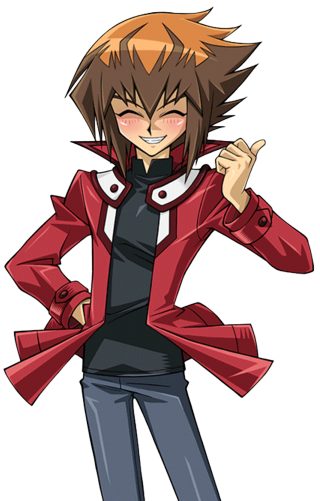 : Everyone! Welcome to...
Duel Academia !
!

Judai and everyone else beamed down to their destination. They were on an huge island, where they saw large forests covering half of it, while a volcano and a rocky valley occupy the other side. There was also a lake with streams that run out into the open ocean. Near the center of the island was a big building near the center. It comprised of a big silver dome surrounded by dark yellow pillars with smaller domes of blue, yellow, and red.
 : Judai, this place is beautiful.
: Judai, this place is beautiful.
Serena said in awe.
/Asuka3.png) : I agree. This is nothing like the island where
Academia
: I agree. This is nothing like the island where
Academia was built on.
was built on.
Asuka added, also impressed by the new scenery.
: It was just a big rock with a high tech fortress using constant surveillance. Compared to that, this place seems... much more alive.
: That makes three of us.
Yusho said, also in agreement.
: Glad you guys approve.
Judai said, glad to hear their approval.
: Well then, I believe my work here is done. If you can handle things from here, Judai, I shall take my leave. By the way, you should know we were
successful in saving
Ruri and
Yuto
and
Yuto and both are safe with
Yuma
and both are safe with
Yuma .
.
: Awesome! Thanks for telling me Astral! Have a safe flight back!
Judai said happily, waving him off.
: I will. We will speak again when our meeting commences.
With that, Astral returned aboard his ship and disappeared once again, heading back to his own world.
: You really went to school here Judai?
Serena asked in wonder. Judai nodded, happy to be back in his favorite place.
: I sure did... and now so will you.
Judai said to her surprise as he took the lead.
: Alright guys, follow me! I'll introduce you to the man running this school and hopefully he can help get you all settled in!
With that, Serena and Yusho's group walked with Judai into the main building just up ahead.
Sitting in his office, a middle aged bald man with a sort grey beard was busy with paperwork. He sighed, wishing things could be a little more interesting this year. Ever since Yuki Judai and most of his friends had graduated, Duel Academy had gotten a little dull. He missed that boy and hoped he was doing well.
At the moment, he was expecting a certain former student to show up for a teaching assistant position. She was still too young to be a full fledged teacher yet, but this would certainly get her feet wet, as the saying goes.
???: Maybe this year, we may have a student or two that would surprise us and exceed expectations. Who knows?
He sighed again, talking to himself.
???: I wouldn't mind having a little excitement around here. But, alas, there won't be another like...
: Hey !
Samejima -
Kosho
! (trad: Samejima-Kôshô = Principal Samejima) Long time, no see! How ya been?
-
Kosho
! (trad: Samejima-Kôshô = Principal Samejima) Long time, no see! How ya been?
The man, Samejima, looked up in surprise to see the very person he was about to name.
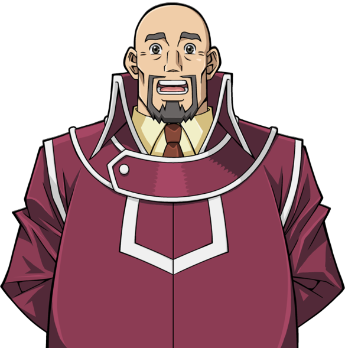 : J-Judai-kun !?
He nearly shouted as he stood straight up. He couldn't believe his eyes. It truly was the former Osiris Red student he admired so much. He was standing just outside his office door.
: Is that... really you?
He questioned, still hardly believing it. Judai chuckled.
: Sure is! This isn't a bad time, is it?
Samejima shook his head as he beckoned the young man inside.
 : Of course not! Come in, dear boy! Welcome back!
: Of course not! Come in, dear boy! Welcome back!
He greeted as he shook Judai's hand.
 : Things just haven't been same around here since you left. Rather quiet, actually. I take it you have been busy post-graduation?
: Things just haven't been same around here since you left. Rather quiet, actually. I take it you have been busy post-graduation?
He asked, looking happy to see his former pupil.
: Oh, you have no idea.
Judai vaguely said with a laugh. Samejima laughed with him.
: I can only imagine, with how interesting things seem to happen with you around. So then...,
The older man became more business like.
: What brings you back to your old school, Judai-kun ?
Judai chuckled a bit.
: Well... That's a bit of a story there.
He then proceeded to tell Samejima about his recent adventures in the Fusion Dimension and the people he brought with him, including Serena. Samejima was intrigued by every detail, especially hearing that one of the escapees was an alternate version of Asuka Tenjoin. That one really surprised him. However, he hated hearing the parts where how students were treated at that other school. He felt total disgust toward Leo Akaba and despised how other people had suffered because of him.

: This "Professor" sounds like quite the tyrant from what I'm hearing. Quite frankly Judai-kun, it's no short of a miracle you and those other students managed to get away from that nightmare they call a school!
: You never ceased to amaze me.
Samejima said fondly.
: Thanks, Kosho.
Said Judai.
 : Would you like meet them? They're waiting outside.
: Would you like meet them? They're waiting outside.
Samejima immediately agreed.
: Of course I would! Have them come in.
At Judai's word, Yusho and Asuka led their students inside. Samejima shook hands with Yusho.
: You must be Yusho Sakaki. Welcome to Duel Academy. Judai told me all about you and how you've been looking after all these students. I'm very pleased to meet you.
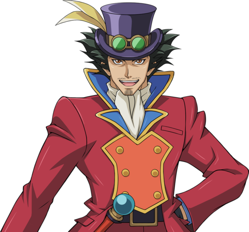
: Thank you, Samejima-Kosho. I can't take all the credit. I've had plenty of help from Asuka here.
Yusho said, patting Asuka on the shoulder.
/Asuka5.png) : It's true. Sensei and I did our best to help all these kids after getting them away from Academia.
: It's true. Sensei and I did our best to help all these kids after getting them away from Academia.
Samejima was shocked at how strongly this Asuka resembled the one that was taught here. Even her voice sounded the same. If Judai hadn't told him ahead of time, he would've thought that this was the Asuka he had been expecting today. He tried his best not to show how he felt.
: I'm... very glad to hear that, Asuka. You did well.
The young woman smiled appreciatively. The older man now turned his attention to the most important guest in the room.
: Let me guess... Serena?
He asked.
: Yes, I'm Serena.
The young girl confirmed as she too shook Samejima's hand.
: Welcome, young lady. Judai tells me you're quite the Duelist.
He said kindly. Serena nodded.
: I am. I've been training hard to become as strong as I am.
: Although, it was for... different reasons.
She said while looking down. To her surprise, Samejima placed a hand on her head and smiled warmly. He then spoke to her softly.
: I've heard. It couldn't have been easy, being raised the way you were. But that is in the past now. And this institution, this Duel Academy... I think you'll find it to be a vast improvement over where you're from. Me and my staff teach our students not to fight in wars and conquer other dimensions, but to become Pro League Duelists... to become champions so as to inspire others. Would you like that to be your future?
Serena thought that over in her mind. All she ever knew was to be a soldier to duel for the Arc Area Project. This was something she was originally proud of doing. Since learning of Leo Akaba's real plans for her and got away from him, Serena became uncertain of what she would do. Now this man, Samejima, who seemed like the exact opposite of Leo, offered her a new path. All her life she wanted to prove her worth as a Duelist, something she now knew meant nothing to her former Professor. Samejima actually cared about her and wanted to guide her to her new destiny. Serena looked at him and smiled.
 : Sir, Samejima-Kosho... that... actually sounds perfect for me.
: Sir, Samejima-Kosho... that... actually sounds perfect for me.
Samejima seemed really pleased.
: I'm glad to hear you say that.
He then looked at all the students that were present.
: Alright, do the rest of you wish to attend this school?
At once, Alex and all the other students said unanimously.
Students: Yes!
He then turned to Yusho and Asuka.
: Is this alright with you both?
The two looked at one another and nodded in agreement.
: Absolutely. I strongly believe these kids will be much happier here than in Academia. Especially since they won't have to worry about being found and dragged back there.
Yusho said. Samejima nodded.
: Excellent. Now all that's left to do is get them qualified and accepted into the appropriate dorms.
This confused Serena and the rest of the student body.
Alex: Wait, we are not all staying in the same place?
Alex asked.
: That depends how your qualification exams go. Your results will determine which dorm you will occupy for the 3 years attending Duel Academy. Although it
is possible to move to other dorms if you show improvement after some time.
Samejima said.
: What do you mean?
Asuka asked. Samejima cleared his throat as he began explaining.
: The students attending Duel Academy are split into 3 separate dorms, each located at a different spot on the island. They are known as Osiris Red, Râ Yellow and Obelisk Blue.
: Did you say Obelisk Blue?
Serena asked as she and the other students flinched in fear when they heard that last one. Samejima saw their reactions and quickly explained.
: Take it easy! There is nothing bad about that dorm. It is simply the one where students with the highest qualifications live in. I assure you, there is nothing
Obelisk Force related about it.
related about it.
After a minute or two, the students all calmed down. Relieved, Samejima continued.
: As I was saying, those dorms will become your new homes while you are attending here. Obelisk Blue, like I just mentioned, is for those who scored the
highest, among other things. Râ Yellow is for those with average or above test scores. Osiris Red is for students who... barely passed the exams.
He said delicately.
: In other words... that dorm is for the weakest Duelists.
Serena said bluntly. Samejima sweat dropped from that comment.
: That's... another way to say it.
He then cleared his throat again.
: However, I should point out that just because Osiris Red is the lowest ranked of the dorms, doesn't mean all its occupants are weak. Our prime example is
Judai-kun here.
Samejima noted as he glanced at Judai. All the students stared at him, stunned.
Alex: Judai! You stayed in Osiris Red?!
Alex asked. Judai smiled as he nodded.
: I sure did, Alex. My jacket is proof of that. Osiris Red may be looked down a lot, but it's really not that bad.
: Have you never moved to one of the other dorms?
Serena asked.
: Well, I did qualify to advance to Ra Yellow in my first year, but I turned it down. I stayed in Red simply because I actually liked it there. Of course, that was just my preference. If you guys don't want to be in Osiris Red, that's cool. Just score high enough and you can enter one of the other dorms.
: Actually, getting into Obelisk Blue isn't that simple. Not only do you need the highest exam scores upon enrollment, but you also have to have a diploma
from a previous dueling prep school. Since none of you have such diplomas, the only way you will be able to enter Obelisk Blue is to advance there from Ra Yellow.
At least, for the boys.
Samejima corrected.
Student: Meaning what?
A girl student asked, hearing that comment. Serena and the other girls wondered about that too.
: Obelisk Blue, unlike the other dorms, is the only one designed to accommodate both boys and girls. In separate buildings, that is. The reason being that the other dorms weren't made for girl students. In other words, any girls admitted into Duel Academy would automatically be placed in Obelisk Blue, regardless if they made the requirements entering the dorm.
This made all the girls apprehensive. Serena, however, was definitely not pleased about this.
: That's stupid. Why should we get special attention just because we are girls? I for one will not stay anywhere with the name "Obelisk" in it. Not a chance.
Serena said with distaste. The other girls fervently agreed with her, as well as the boys. Samejima nodded in understanding.
: I don't blame you. That name has a really bad reputation where you're from, after all. In that case, I will personally see to it that all the girls here
will get the option to stay in either in Osiris Red or Râ Yellow... edepending on your test results of course.
Everyone seemed much happier after that statement.
Student: So how are we going to take these qualification exams?
One of the other students finally asked.
: You will all be given a written test first to determine your dueling knowledge. After that will be a practical test, which involves a Duel with an
assigned examiner. Your results from both tests will be used to assign each of you to the appropriate dorms.
Samejima answered.
: That doesn't sound so tough. When can we begin?
Serena asked, eager to get started.
: Well, first I'm expecting someone to drop by pretty soon to help out with one of our teachers. After I finalize her position, I will immediately begin
putting together your individual tests. In the meantime, Judai-kun...
Samejima said to the former Osiris student.
: Would you like to take everyone on a tour, showing them where the dorms are and what they are like?
Judai seemed excited by this.
: You got it! Alright people, let's move out! First up, my old home, the dorm of Osiris Red!
Judai said happily as he lead the group out. Samejima sighed once more and shook his head.
: Looks like it won't be so dull around here anymore...
: So this is the Osiris Red dorm?
Serena asked.

The building before the group was a two floor wooden building with a staircase on the left. There appear to be 8 rooms, 4 on each floor. There also seemed to be another section on the left that seemed to be recently constructed. The roof had a red brown color on it.
: Sure is. Seeing this place again sure brings back memories. Let's take a quick look inside.
Judai said as he led everyone to one of the dorm's rooms. It seemed simple enough.
: You could say staying here is like living at a cabin in a camping site. The food and utilities aren't the best, but it's better than nothing.
Serena and the others could see why this was considered the lowest of the dorms. It was definitely a far cry from the living quarters she had at Academia. However, at least she wouldn't be a prisoner here being constantly watched. Plus, Judai said he liked it here. Maybe she too could adjust...
: This doesn't look so bad.
Yusho commented.
: Not that bad at all.
Serena said to herself.
Alex: Where does that door lead too?
Alex asked, pointing to a door on the far wall.
: Oh, that actually leads into the best room in the dorm. It was added by a former classmate of mine. You're all going to love this.
Judai said excitedly as he led the group through the door.
Everyone was awestruck. They felt like they had just stepped into fancy hotel suite. There was even a luxurious bathroom.
Student: Whoever did this had to have some cash to burn.
The red haired girl said in awe. Judai nodded, telling her it was.
: Who is in charge of the dorms?
Asuka asked. Judai then appeared a little sad, to her surprise.
: Each dorm has someone to supervise and all it's students.
 : The man who watched over Osiris Red when I came here... is gone now.S
: The man who watched over Osiris Red when I came here... is gone now.S
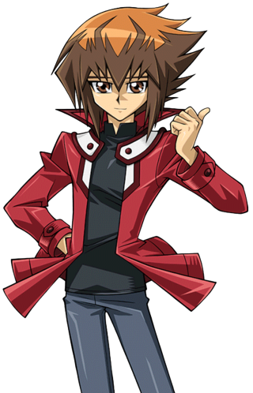
: It's now being watched over by the same person who watches over Obelisk Blue. He's not the same, but it's cool.
Judai lamented.
: I wonder what he meant by that.
Serena thought. Yusho also wondered.
After a few minutes of exploring, Judai led them to their next stop.
: This here is the Râ Yellow dorm. Professor
Kabayama is the head teacher here, and happens to be a heck of a chef. Pretty snazzy set up, wouldn't you say?
is the head teacher here, and happens to be a heck of a chef. Pretty snazzy set up, wouldn't you say?
The yellow colored building was not only much bigger than then the previous dorm, but it also was a much more welcoming sight. Compared to Osiris Red, this place looked like a mini mansion.
: Shall we?
Judai said as he beckoned them inside.
The food was great, the bathrooms were nice, and the bedrooms seemed much more comfortable. Most of the students were definitely far more impressed with this dorm than the previous. In fact, Ra Yellow appeared very homey. Serena herself thought it seemed fine. She wondered why Judai turned down a chance to stay here.
Student(2): I hope I score high enough to get in this place.
One of the girl students said excitedly.
: Maybe you will.
Asuka said.
After exploring the dorm, the students were reluctant to leave, especially knowing where they would be going to next. After some coercing from Yusho, the group finally left and headed to the final dorm.
Upon arriving several minutes later, their eyes were set on not one, but two white castles with blue roofs. The one further away, right above the lake, had a lighter shade of blue and a more feminine appeal to it.
: And here is Obelisk Blue! Like Principle Samejima said, the students here basically live like they are seriously loaded and are considered the best in the school. Some of them are kinda snobbish, but that's not always the case. The really big one in front is where the boys stay, while the other one over there is for the girls.
Judai said, remembering meeting and dueling the Asuka Tenjoin he knew. He missed her like he missed his other school friends, including his best friend, Sho Marufuji. He wondered where she and the others were now, and what they were doing.
: Who's in charge of both dorms?
Yusho asked.
: The girl's dorm is supervised by
Emi Ayukawa - sensei
, who is also the school's gym teacher and nurse. She's really nice and I'm sure she would make you feel welcome here.
- sensei
, who is also the school's gym teacher and nurse. She's really nice and I'm sure she would make you feel welcome here.
Judai said to the girls, who still had reservations about the dorm.
: The head teacher of the boy's dorm is Cronos de Medici . He's a weird guy who didn't really like me at first... mostly because I kicked his butt in my own entrance exam. But we are on good terms now.
Judai explained, remembering the day he got into Duel Academy. It was also the day he bumped into
Yugi Muto for the first time and had received his
for the first time and had received his
“Hane Kuriboh ” card from him.
: Man, those were the days...
Student: Do we really have to look inside?
The green haired boy student asked.
Despite their reassurances from Samejima and Judai, none of the students want to venture into the highest ranked dorms. Judai, Yusho, and Asuka could tell they really want nothing to do with anything that remotely reminded them of Leo Akaba's personal elite soldiers who were sadistic and cruel. They began to worry if they would even fear the students living there. If only there was someone that could truly convince them that Obelisk Blue and its occupants weren't evil...
???: Judai-sama ! You came back!
Without warning, Judai got tackled to the ground by young girl wearing a sleeveless red jacket and had long dark hair. The whole group was surprised by the girl, but not as much as Judai himself as he got himself back up.
: Man,
Rei , you could try to show just a little restraint when you greet someone.
, you could try to show just a little restraint when you greet someone.
Judai complained. Rei chuckled lightly.
 : Sorry. I'm just so happy to see you again!
: Sorry. I'm just so happy to see you again!
Alex: Who's this? Your girlfriend?
Alex asked teasingly. Judai nearly freaked out, while Rei herself lightly blushed.
: What, no! She is just a friend!
He clarified.
Rei then approached everyone and introduced herself.
 : Hi everyone! My name is Rei Saotome, a second year student in Duel Academy! Are you all new here?
: Hi everyone! My name is Rei Saotome, a second year student in Duel Academy! Are you all new here?
She asked all the other students.
: You could say that.
Serena answered.
: I take it you are in Osiris Red, judging by your jacket.
She was surprised again when Rei shook her head.
: Not anymore. I was in Osiris Red at first when I got enrolled last year, but halfway through I advanced up to Obelisk Blue.
This made the students fearful again, which Rei definitely noticed.
 : Uh, did I say something wrong?
: Uh, did I say something wrong?
She asked, looking confused by their reactions.
: If you're in Obelisk Blue, then why are you wearing an Osiris Red jacket?
Asuka asked. Rei then gasped when she noticed her for the first time.
: Asuka-san! You also came back! I missed you too!
: But... why would you ask me that? You were here when I advanced.
Asuka tilted her head and raised an eyebrow when she heard this.
: Um... I don't know what you're talking about. I was never here until now. Also, I'm pretty sure we've never met. How do you know my name?
Judai sweat dropped and mentally slapped himself. He had completely forgotten to mention there was another Asuka in his world to the others.
: Uh, can I talk to you guys in private for just a second?
Judai said quickly to Yusho, Serena, Asuka, and Rei.
: I'll be right back! Just stay right there!
He said to the students, who were all confused. Once out of earshot, Judai began to set the record straight.
: Okay, first of all Rei, this isn't the Asuka that we know. She actually comes from a far away place where she never met you, me, or anyone here. She just happens to be visiting.
 : Another Asuka?
: Another Asuka?
Rei asked, stunned to hear such a thing was possible.
: You mean like... from another reality or something?
: Yeah... Something like that.
Judai then turned to Asuka, who was just as stunned as Rei was.
: Asuka, sorry I didn't tell you this before, but there is a version of you in my world I went to school with. She graduated at the end of last year like me. I just wasn't expecting Rei to bump into us like this.
/Asuka7.png) : It's okay, Judai.
: It's okay, Judai.
Asuka managed to say. She found it very hard to believe another her existed. She wondered how that other Asuka's life was compared to her own. Probably very different. It was something she needed time to let sink in.
 : Another Asuka in this world? Incredible.
: Another Asuka in this world? Incredible.
Yusho said in amazement.
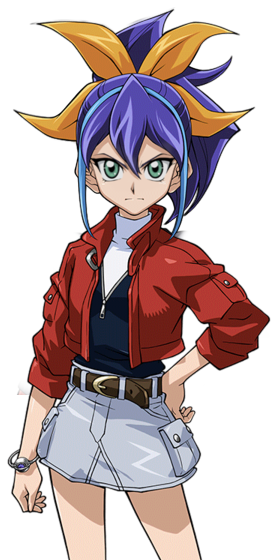
: Just when I thought Judai couldn't surprise us anymore.
Serena said dryly.
: Glad to know you all understand.
As he turned back to Rei, a sudden idea popped into his head.
: Hey Rei. Can you help me out with something?
At once, the younger girl became ecstatic again.
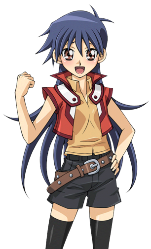 : Sure, Judai! Anything! What do you need?
He then explained to her about how the other new students he brought felt about Obelisk Blue. She was shocked at the reasons why they hated the Obelisk name so much and wanted nothing to do with it.
 : Poor kids. I can see how they would feel about it.
: Poor kids. I can see how they would feel about it.
: No kidding. Do you think you can try to convince them that Obelisk Blue isn't bad? You can guide the girls through the girl's dorm while I do the same with
the guys. It would be a big help if you could lend a hand.
Judai said. Rei nodded.
: You got it!
With that, the group walked back to Alex and his fellow students. At a nod from Judai, Rei spoke to Serena, Alex, and the other students.
: Hey again. Listen, Judai just told me about your issues with Obelisk Blue. As a student currently living there, I can promise you that it isn't a terrible place at all. The girls I know in that dorm are really nice and I'm sure they would treat you all well. As for the boys, they can have a bit of an attitude, but they are not tyrants. If you guys really don't want to move into Obelisk Blue while attending Duel Academy, that's okay. No one here, including me or Judai, is forcing you. All I'm saying is that you shouldn't see it as some disease you should avoid. It is just a place for students with high privileges and high dueling skills.
Rei then paused to let all her words sink in the minds of all those apprehensive students.
Everyone looked at one another and whispered among themselves. Rei's words seem to finally ease them regarding the dorm... except for one. Serena, despite all she heard, still looked adamant to stay clear of the dorm. Judai, Rei, Asuka, and Yusho noticed her obvious expression and sighed inwardly. They all could tell that she was truly a stubborn one.
Student: Um... Rei-san ?
Said the girl student with red hair.
: Yeah?
Rei asked hopefully.
Student: After discussing it, me and the rest of us decided to at least see how the dorms are.
She replied. Rei smiled.
: Great! Okay, all the girls can follow me, while the boys follow Judai-sama!
She said as she started leading Asuka and the rest of the girls, until she saw Serena not moving from where she stood.
: Are you not coming?
She asked. Serena turned away, still frowning with her arms crossed.
 : No. I will NEVER set foot in there. I'll wait outside.
: No. I will NEVER set foot in there. I'll wait outside.
She said defiantly with her back turned. Rei seemed a little disappointed, but understood.
: Okay, I get it. You can stay out here. The rest of you ladies, this way.
Rei and the girls then walked toward and inside the girl's dorm of Obelisk Blue.
: Alright guys! Let's see how things look in the boy's dorm.
Judai said as he led the boy students to the other dorm.
: Judai, I'll stay here and keep Serena company until everyone comes back.
Yusho said. Judai nodded, understanding the reason.
: Sure thing, Yusho. Be back in a few, Serena.
As soon as Judai led the boy students inside the dorm building, Yusho faced Serena.
: This really does bother you, doesn't it.
The older man asked softly. Serena snorted.
 : Anything named "Obelisk" I want nothing to do with. It just keeps reminding me of the Obelisk Force, and how they were to everyone.
: Anything named "Obelisk" I want nothing to do with. It just keeps reminding me of the Obelisk Force, and how they were to everyone.
She hated those guys, and it was not just because Akaba Leo had them prevent Serena from escaping Academia.
: They were always arrogant, self centered bastards who blindly take orders from a man I lost all respect for. I couldn't stand the sight of them. And this school has a dorm with the same name as them! Judai, Samejima-kosho, Rei... they can all say it, but I won't change my view. I honestly can't believe Alex and the other students would even consider going near those places, let alone step inside them.
: Serena, they are just seeing what those dorms are like, that's all. I'm not saying any of them will move in eventually. What I am saying is that just because
a place has a name you despise, doesn't mean that the place itself would be just as despicable.
Yusho said. Serena snorted again.
: Whatever.
She retorted. Yusho gave up and just let the girl be.
???: Hi there. Is there a problem?
Yusho and Serena turned to see who was addressing them.

They saw Asuka walking toward them. However, they were surprised by a few things when they saw her. First, she didn't come out from the Obelisk Blue girl's dorm, but rather from the direction of the main Duel Academy building. Second, she wore different clothes than she did earlier. Instead of her old school uniform, she wore a light business suit, like she just came from a job interview. Lastly, and most significantly of all, Asuka didn't seem to recognize either one of them.
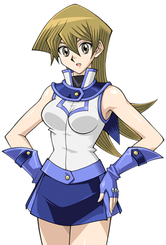
: Why are you both looking at me like that?
Asuka asked as she met up with them.
: What's with the new look, Asuka? I thought you were touring the girl's dorm with Rei?
Serena asked, surprising the older girl.
: Excuse me? Do I know you?
Asuka asked back.
: Pardon me, but do you not know us?
Yusho asked, already suspecting what the case may be. Asuka then shook her head.
 : Sorry, but I've never seen either of you before.
: Sorry, but I've never seen either of you before.
Yusho and Serena glanced at one another and they immediately understood. This was not their Asuka. Meaning this had to be the one of this world... the one Judai himself knew.
: No, there is no problem here.
Yusho said, quickly trying to change the subject while smiling.
: My apologies, young lady. We had mistaken you for someone else, that's all. Anyway, is there anything we can help you with?
Asuka, still confused, decided to put it aside for now and brought up her reason for being there.
 : I had just come from the main Academy building to look for a Sakaki Yusho and a group of students. Are you him, sir?
: I had just come from the main Academy building to look for a Sakaki Yusho and a group of students. Are you him, sir?
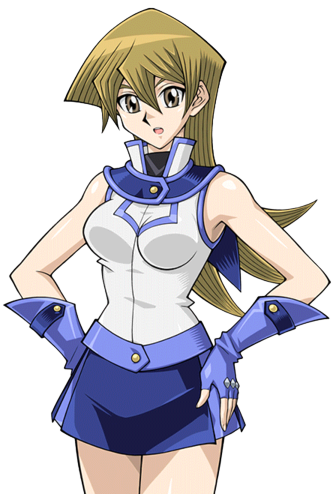
: Are you him, sir?
Asuka asked. Yusho became relieved.
: Yes, I am.
He said as he and Asuka shook hands.

: Pleasure to meet you, Sakaki-san. I am Asuka Tenjoin, recently appointed junior head of the Obelisk Blue girl's dorm. Samejima-Kôshô asked me to come find you and tell you that he has the qualification exams ready for your students to take.
: Excellent news. Thanks for telling us.
Yusho said appreciatively.
Asuka then eyed Serena again.
: Are you one of his students?
Serena still felt uncomfortable talking to an Asuka she didn't know. However, she kept this to herself.
: Yes. My name is Serena.
She said formally.
: Nice to meet you, Serena. So where are your fellow students?
Asuka asked as she looked around but saw no other children.
: They are taking separate tours of the Obelisk Blue dorms. They'll be back shortly.
Serena said in a tone that made Asuka feel she had said something wrong.
Before she could ask if something was bothering her, they heard some loud conversations coming from the boy's dorm. They turned to see a group of boys coming towards them. Asuka figured they must be some of the students in Yusho's care. That was when she saw who was leading them their way... and immediately felt her heart race.
: Judai?! Can it really be?
As they came out of the dorm, the boys were discussing how Obelisk Blue was like.
Student (1): I really didn't believe it at first, but that place wasn't so bad after all.
Said the green haired boy.
Student (2): That dorm really was like a castle from those old fairy tales. It felt much more fancy and less stuffy like at Academia.
Said another boy who unexpectedly enjoyed the tour.
Alex: The boys in there seem polite enough, but I still not rather live in there. It just seemed too fancy for my tastes.
Alex said.
Judai was pleased that at least the boys no longer feared the highest ranked dorm in the school.
: See, I told you so.
He said to them as they made their way back to Yusho and Serena. He saw that Asuka was with them again, but he was surprised that she looked different now and that Rei and the other girls weren't with her. And what's more, she seemed a little flustered and speechless as he approached.
: Hey Asuka, um... what's with the new get up? You got something going on right now?
Judai asked curiously. Asuka shook her head, getting her head out of the clouds.
 : Oh, um... Hey Judai. It's been... a long time. You look good.
: Oh, um... Hey Judai. It's been... a long time. You look good.
Asuka said, still feeling embarrassed. Judai's confusion grew.
: Long time? I saw you a short time ago with...
Before he could finish, he was instantly interrupted.
: Judai, could I have a quick word?
Yusho said as he beckoned the boy a short distance away, just out of earshot. Though stumped, Judai complied and walked with him. Asuka was as confused as Judai was, but Serena knew what was going on.
: What's the big deal Yusho?
Judai asked. Yusho then spoke to the young Duelist once he was convinced they couldn't be overheard.
: Judai, listen. That Asuka you were talking to just now... she's the one you know here, in your world.
Judai gasped at once and turned to look at Asuka again.
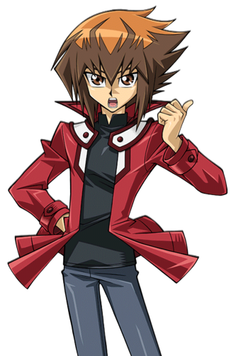
: Seriously?! The Asuka I've known for 3 years?! She's... come back here?!
He said, totally stunned this. Yusho chuckled.
: It would seem so. And it also seems that she's very happy to see you.
He said with a knowing look. A look that apparently was lost on the boy.
: So that suit... is she like working here now?
Judai asked.
: Yes, she is.
Yusho said, while also telling him that Principal Samjima was ready to have Serena and the rest tested for qualification. This pleased the boy as the duo headed back to the two girls.
: What was that about? You two know each other?
Asuka asked. Yusho laughed as he patted Judai on the back.
: We have worked together recently, yes. I was just telling Judai that he should take some time to catch up with an old school friend.
He then gave Judai a friendly push forward. He almost knocked her over when he bumped into her. Asuka then felt herself going slightly limp as Judai held himself on her shoulders to try to not to fall on top of her.
: Oh uh, sorry Asuka!
Judai apologized quickly, hoping he didn't offend her. Asuka only laughed.
 : Don't be. You did nothing wrong.
: Don't be. You did nothing wrong.
She assured him.
: So, can we... catch up?
She asked while smiling. Judai smiled back and nodded.
: Sure. If it's cool with you two.
He looked back at Yusho and Serena.
: Don't worry. I'll tell the others about the exams and lead them back to take them. You can drop by later to watch the qualification Duels.
Yusho said.
: It's fine.
Serena said while shrugging.
Though she didn't show it, she didn't like how this other Asuka was behaving around Judai. She acted liked she wanted to be closer to him. Serena didn't know why, but it somehow bothered her...
: Okay, I'll see you duel later Serena! Good luck in the written exams! They're can be... a killer!
Judai said as he left with Asuka.
As he said that, Judai remembered how hard the written exams were. He himself had barely passed. It was the primary reason he ended up in Osiris Red. He was sure Serena would do much better than he did.
While watching the pair walk to chat, Yusho smiled and felt something going on between them.
: I could tell that this world's Asuka has strong feelings for Judai... but it seems he doesn't know it himself. At least, not yet...
Yusho thought with a smile.
He then saw Serena frowning.
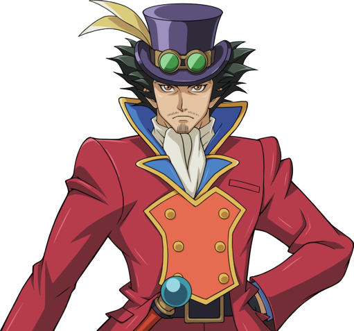 : Anything on your mind?
He asked her. It was then that Rei was coming back with her own tour group, including the Asuka she herself knew. She didn't want her insecurities to show themselves to her or anyone else. So instead, Serena smirked and grunted as she tried to look tough.
 : What's on my mind... is kicking ass on those qualification exams.
: What's on my mind... is kicking ass on those qualification exams.